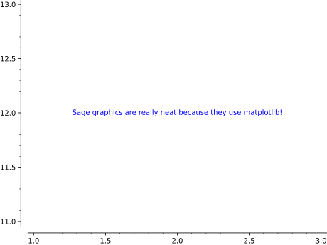

Return a dictionary with the bounding box data. Notice
that, for text, the box is just the location itself.
EXAMPLES:
sage:T=text("Where am I?",(1,1))sage:t=T[0]sage:t.get_minmax_data()['ymin']1.0sage:t.get_minmax_data()['ymax']1.0
>>>fromsage.allimport*>>>T=text("Where am I?",(Integer(1),Integer(1)))>>>t=T[Integer(0)]>>>t.get_minmax_data()['ymin']1.0>>>t.get_minmax_data()['ymax']1.0
Return a 2D text graphics object at the point \((x, y)\).
Type text.options for a dictionary of options for 2D text.
2D OPTIONS:
fontsize – how big the text is. Either an integer that
specifies the size in points or a string which specifies a size (one of
'xx-small', 'x-small', 'small', 'medium', 'large',
'x-large', 'xx-large').
fontstyle – string either 'normal', 'italic' or 'oblique'
fontweight – a numeric value in the range 0-1000 or a string (one of
'ultralight', 'light', 'normal', 'regular', 'book',
'medium', 'roman', 'semibold', 'demibold', 'demi',
'bold', 'heavy', 'extrabold', 'black')
rgbcolor – the color as an RGB tuple
hue – the color given as a hue
alpha – a float (0.0 transparent through 1.0 opaque)
background_color – the background color
rotation – how to rotate the text: angle in degrees, vertical, horizontal
vertical_alignment – how to align vertically: top, center, bottom
horizontal_alignment – how to align horizontally: left, center, right
zorder – the layer level in which to draw
clip – boolean (default: False); whether to clip or not
axis_coords – boolean (default: False); if True, use axis
coordinates, so that (0,0) is the lower left and (1,1) upper right,
regardless of the x and y range of plotted values
bounding_box – dictionary specifying a bounding box; currently the
text location
EXAMPLES:
sage:text("Sage graphics are really neat because they use matplotlib!",(2,12))Graphics object consisting of 1 graphics primitive
>>>fromsage.allimport*>>>text("Sage graphics are really neat because they use matplotlib!",(Integer(2),Integer(12)))Graphics object consisting of 1 graphics primitive

Larger font, bold, colored red and transparent text:
sage:text("I had a dream!",(2,12),alpha=0.3,....:fontsize='large',fontweight='bold',color='red')Graphics object consisting of 1 graphics primitive
>>>fromsage.allimport*>>>text("I had a dream!",(Integer(2),Integer(12)),alpha=RealNumber('0.3'),...fontsize='large',fontweight='bold',color='red')Graphics object consisting of 1 graphics primitive
By setting horizontal_alignment to ‘left’ the text is guaranteed to be
in the lower left no matter what:
sage:text("I got a horse and he lives in a tree",(0,0),....:axis_coords=True,horizontal_alignment='left')Graphics object consisting of 1 graphics primitive
>>>fromsage.allimport*>>>text("I got a horse and he lives in a tree",(Integer(0),Integer(0)),...axis_coords=True,horizontal_alignment='left')Graphics object consisting of 1 graphics primitive
Various rotations:
sage:text("noitator",(0,0),rotation=45.0,....:horizontal_alignment='left',vertical_alignment='bottom')Graphics object consisting of 1 graphics primitive
>>>fromsage.allimport*>>>text("noitator",(Integer(0),Integer(0)),rotation=RealNumber('45.0'),...horizontal_alignment='left',vertical_alignment='bottom')Graphics object consisting of 1 graphics primitive
sage:text("Sage is really neat!!",(0,0),rotation='vertical')Graphics object consisting of 1 graphics primitive
>>>fromsage.allimport*>>>text("Sage is really neat!!",(Integer(0),Integer(0)),rotation='vertical')Graphics object consisting of 1 graphics primitive
You can also align text differently:
sage:t1=text("Hello",(1,1),vertical_alignment='top')sage:t2=text("World",(1,0.5),horizontal_alignment='left')sage:t1+t2# render the sumGraphics object consisting of 2 graphics primitives
>>>fromsage.allimport*>>>t1=text("Hello",(Integer(1),Integer(1)),vertical_alignment='top')>>>t2=text("World",(Integer(1),RealNumber('0.5')),horizontal_alignment='left')>>>t1+t2# render the sumGraphics object consisting of 2 graphics primitives
sage:bbox={'boxstyle':"rarrow,pad=0.3",'fc':"cyan",'ec':"b",'lw':2}sage:text("I feel good",(1,2),bounding_box=bbox)Graphics object consisting of 1 graphics primitive
>>>fromsage.allimport*>>>bbox={'boxstyle':"rarrow,pad=0.3",'fc':"cyan",'ec':"b",'lw':Integer(2)}>>>text("I feel good",(Integer(1),Integer(2)),bounding_box=bbox)Graphics object consisting of 1 graphics primitive
sage:text("So good",(0,0),bounding_box={'boxstyle':'round','fc':'w'})Graphics object consisting of 1 graphics primitive
>>>fromsage.allimport*>>>text("So good",(Integer(0),Integer(0)),bounding_box={'boxstyle':'round','fc':'w'})Graphics object consisting of 1 graphics primitive
The possible options of the bounding box are ‘boxstyle’ (one of ‘larrow’,
‘rarrow’, ‘round’, ‘round4’, ‘roundtooth’, ‘sawtooth’, ‘square’), ‘fc’ or
‘facecolor’, ‘ec’ or ‘edgecolor’, ‘ha’ or ‘horizontalalignment’, ‘va’ or
‘verticalalignment’, ‘lw’ or ‘linewidth’.
A text with a background color:
sage:text("So good",(-2,2),background_color='red')Graphics object consisting of 1 graphics primitive
>>>fromsage.allimport*>>>text("So good",(-Integer(2),Integer(2)),background_color='red')Graphics object consisting of 1 graphics primitive
Use dollar signs for LaTeX and raw strings to avoid having to
escape backslash characters:
Text coordinates must be 2D, an error is raised if 3D coordinates are passed:
sage:t=text("hi",(1,2,3))Traceback (most recent call last):...ValueError: use text3d instead for text in 3d
>>>fromsage.allimport*>>>t=text("hi",(Integer(1),Integer(2),Integer(3)))Traceback (most recent call last):...ValueError: use text3d instead for text in 3d
Or produce 2D text with coordinates \((x, y)\) and plot it in 3D (at \(z = 0\)):
sage:t=text("hi",(1,2))sage:t.plot3d()# text at position (1, 2, 0)Graphics3d Object
>>>fromsage.allimport*>>>t=text("hi",(Integer(1),Integer(2)))>>>t.plot3d()# text at position (1, 2, 0)Graphics3d Object
Extra options will get passed on to show(), as long as they are valid. Hence this
sage:text("MATH IS AWESOME",(0,0),fontsize=40,axes=False)Graphics object consisting of 1 graphics primitive
>>>fromsage.allimport*>>>text("MATH IS AWESOME",(Integer(0),Integer(0)),fontsize=Integer(40),axes=False)Graphics object consisting of 1 graphics primitive
is equivalent to
sage:text("MATH IS AWESOME",(0,0),fontsize=40).show(axes=False)
>>>fromsage.allimport*>>>text("MATH IS AWESOME",(Integer(0),Integer(0)),fontsize=Integer(40)).show(axes=False)